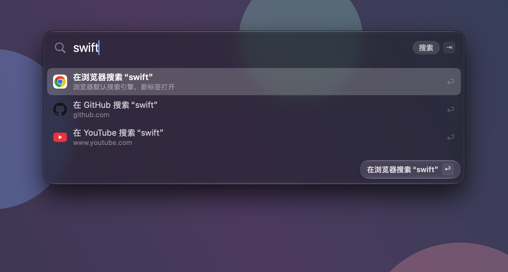
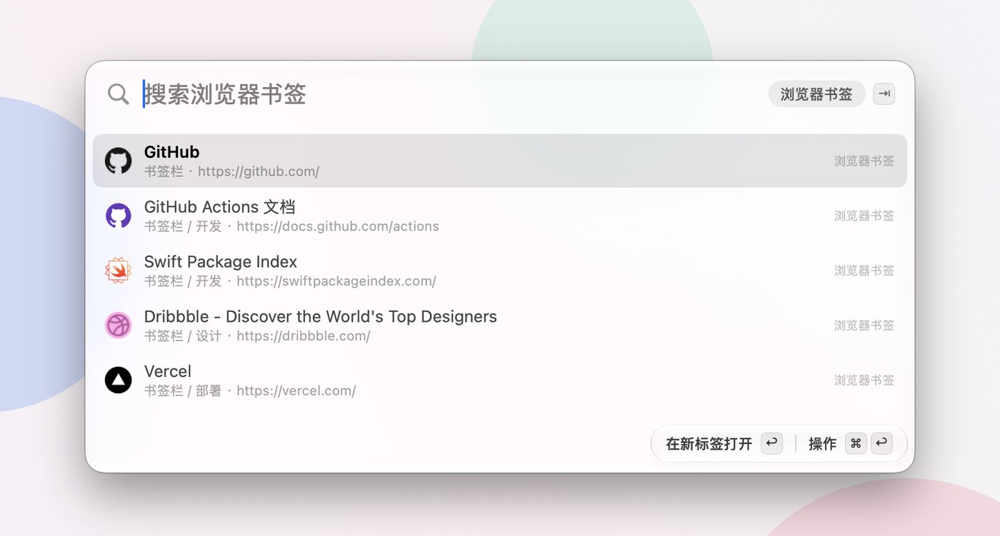
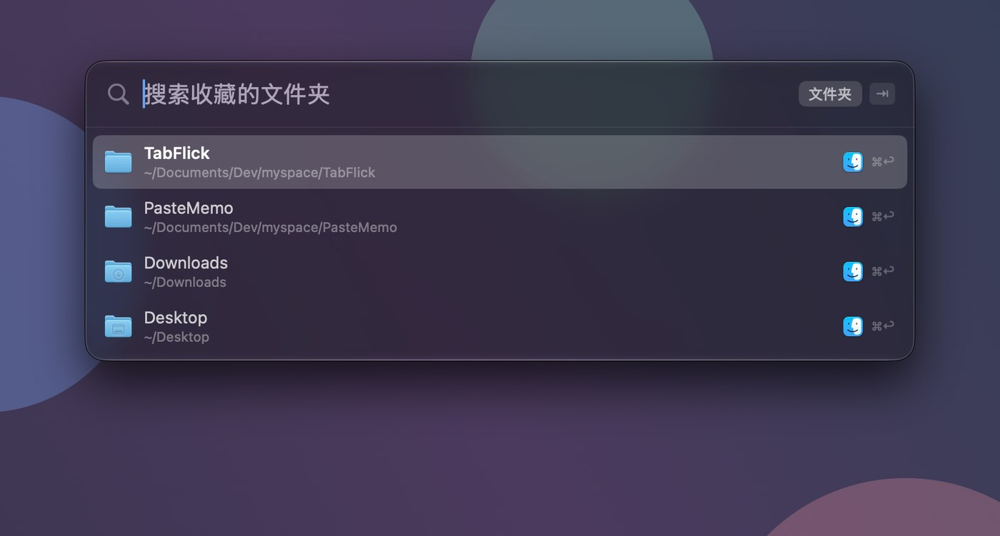

切换器 · ⌃⇥
Chrome 的 ⌃⇥ 按标签栏顺序走。TabFlick 让它按你用过的顺序走。
搜索面板 · ⌘E
标签、最近关闭、书签、历史记录、收藏的文件夹、已装的 App，都在同一个框里。



置顶的标签重启浏览器后自动回来，停在最后看的那页。
12 小时、24 小时或 7 天没用过就关掉；置顶、在放声音的、标签组里的不动。默认关。
状态栏菜单按窗口列出所有标签和最近关闭的，点一下切过去。
把常用目录收在菜单栏，选 Finder、终端或编辑器打开。
在浏览器之外按 ⌃⇥，按浏览器分组列出所有标签。默认关。
扩展没连上时，⌃⇥ 交回给 Chrome 自带的切换，不会按了没反应。
一个 App 加一个浏览器扩展，两分钟装好。
第一次启动会打开「系统设置」的「辅助功能」页，TabFlick 已经在列表里，打开它的开关，App 会自动重启。菜单栏图标变亮就是连上了。
~/Library/Logs/TabFlick/tabflick.log。
┌─────────────────────────┐ ┌──────────────────────────┐ │ Chrome Extension (MV3) │ ws:// │ Swift Helper │ │ │◄───────►│ │ │ · tabs / bookmarks │ :41573 │ · CGEventTap (keys) │ │ · history / favicons │ │ · NSPanel (panels) │ │ · captureVisibleTab │ │ · MRU state machine │ └─────────────────────────┘ └──────────────────────────┘
都可以在设置里改。
浏览器在前台时
| ⌃ ⇥ | 切到上一个用过的标签 |
| ⌃ ⇥ ⇥ | 按住 ⌃ 连点，继续往回走 |
| ⌃ ⇧ ⇥ | 反向 |
| ⌃ ← → | 按住 ⌃ 时用方向键移动 |
| 松开 ⌃ | 切过去 |
⌥Space 在任何 App 里都能用
| ⌘ E | 在浏览器里打开 |
| ⌥ Space | 在别的 App 里打开，搜所有浏览器 |
| ⇥ / ⇧ ⇥ | 切换范围 |
| ⌘ 1–9 | 直接选第几行 |
| ⌘ ↩ | 文件夹换一个 App 打开 |
| ⌘ , | 打开设置 |